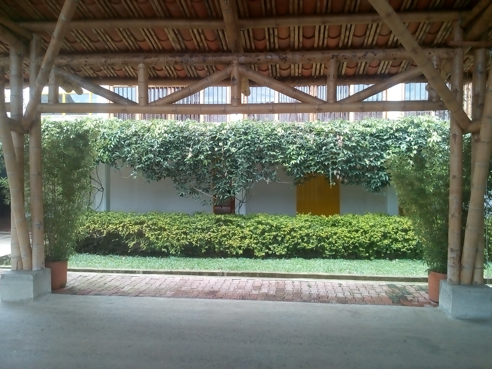
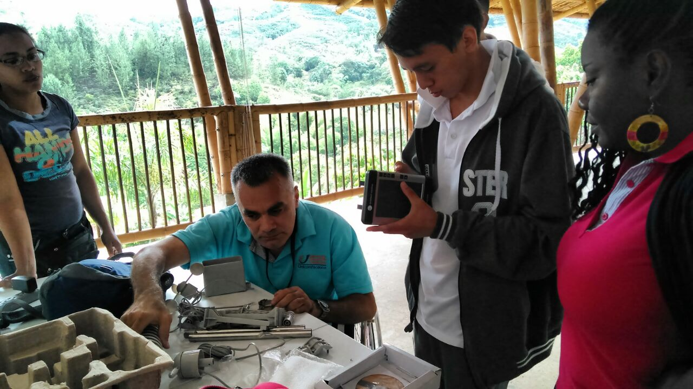

Estacion Meteorologica Unicomfacacuca - Fundamor



Bienvenido a la Estacion Meteorologica Unicomfacauca - Fundamor.
La estación meteorológica en uso es <#stationtype>, y esta página se actualiza cada <#interval> minutos. El día meteorológico utilizado en esta estación termina en <#rollovertime>.
Pronostico: <#forecast>